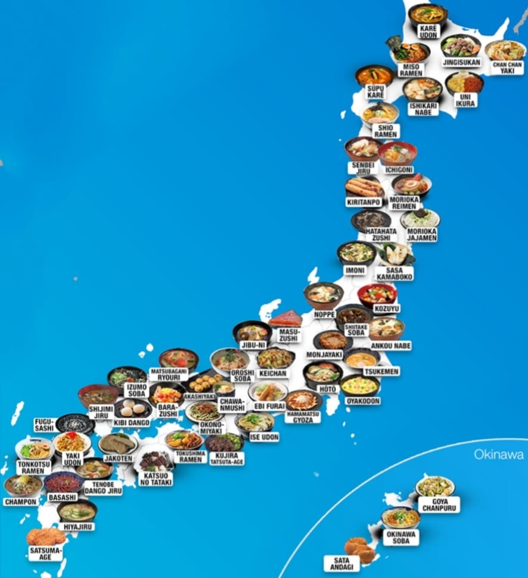

Japanese Cuisines
Home
About Japanese Cuisines
Japanese cuisine encompasses the regional and traditional foods of Japan, which have developed through centuries of political, economic, and social changes. The traditional cuisine of Japan (Japanese: washoku) is based on rice with miso soup and other dishes; there is an emphasis on seasonal ingredients. Side dishes often consist of fish, pickled vegetables, and vegetables cooked in broth. Seafood is common, often grilled, but also served raw as sashimi or in sushi. Seafood and vegetables are also deep-fried in a light batter, as tempura. Apart from rice, a staple includes noodles, such as soba and udon. Japan also has many simmered dishes, such as fish products in broth called oden, or beef in sukiyaki and nikujaga.
Historically influenced by Chinese cuisine, Japanese cuisine has also opened up to influence from Western cuisines in the modern era. Dishes inspired by foreign food—in particular Chinese food—like ramen and gyōza, as well as foods like spaghetti, curry and hamburgers, have been adapted to Japanese tastes and ingredients. Some regional dishes have also become familiar throughout Japan, including the taco rice staple of Okinawan cuisine that has itself been influenced by American and Mexican culinary traditions. Traditionally, the Japanese shunned meat as a result of adherence to Buddhism, but with the modernization of Japan in the 1880s, meat-based dishes such as tonkatsu and yakiniku have become common. Since this time, Japanese cuisine, particularly sushi and ramen, has become popular globally.

Non-Veg
Champon
more info
→
Kushikatsu
more info
→
Teppanyaki
more info
→
Veg
Tempura
more info
→
Miso Soup
more info
→
Veg Ramen
more info
→
Break Fast
Dorayaki
more info
→
Tamagoyaki
more info
→
Okayu
more info
→
Back to Top ↑